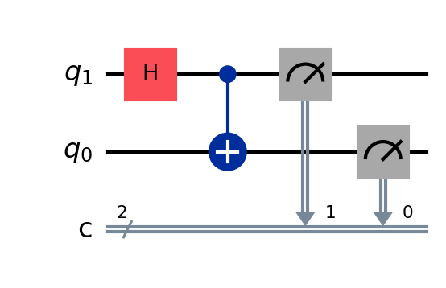
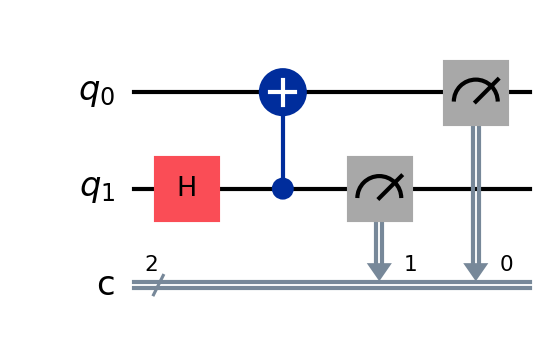
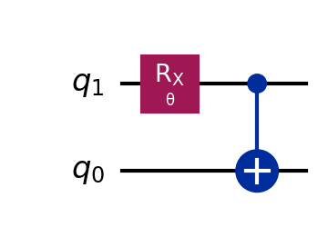
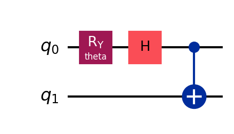
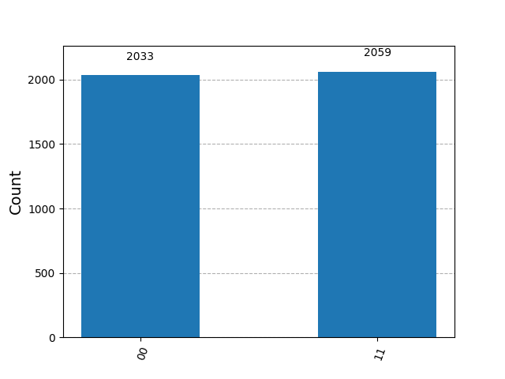
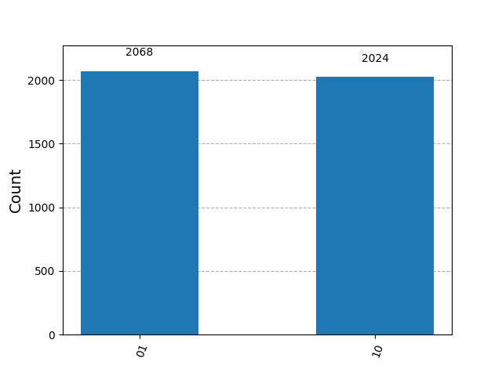
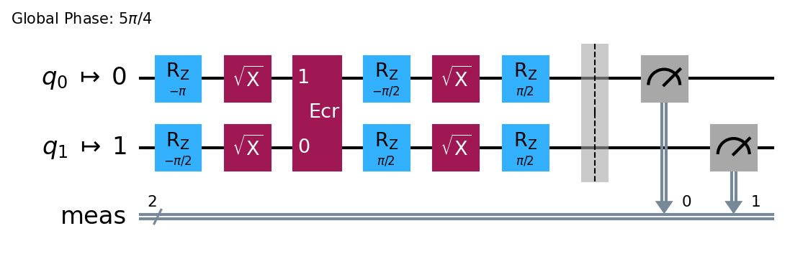

Example: Bell Circuits
Table of Contents
- 1. Qiskit Primitives
- 2.
qiskit_aerPrimitives - 3. Bell Circuits on IBM Quantum Hardware
1. Qiskit Primitives
1.1. Overview
- The interface for the various simulators (BasicSimulator, AerSimulator) were identical to the Qiskit IBM Provider interface to the quantum hardware
- The backend was an abstraction for something that was either simulator or an actual quantum processor.
- Primitives abstract the interface between users and backends
- There are two available primitives:
- Sampler - this samples the output state of a circuit
- Estimator - this stimates expectation values of a state with respect to observables
- Qiskit, Qiskit Aer, and Qiskit IBM Runtime each provide different primitives.
- Diego recommends starting with the version 2 primitives, which are compatible with the current hardware:
- Qiskit
- StatevectorSampler
- StatevectorEstimator
qiskit_aerprimitives.SamplerV2primitives.EstimatorV2
qiskit_ibm_runtimeSamplerV2EstimatorV2
1.2. Primitives
Qiskit primitives are computational building blocks used in larger applications that require quantum resources to efficiently produce outputs. The inputs to a primitive consists of primitive unified blocs (PUBs).
There are two types of primitives:
EstimatorV2SamplerV2
The workflow is as before: build a circuit, and then simulate it (or run it on hardware).
1.2.1. Imports
from qiskit import QuantumCircuit from qiskit.primitives import StatevectorSampler, StatevectorEstimator from qiskit.providers.basic_provider import BasicSimulator print('imports complete') # it's sometimes desirable to check job completion
imports complete
1.2.2. Build a Circuit
qc = QuantumCircuit(2, 2) qc.h(1) qc.cx(1,0) qc.measure([1,0],[1,0]) # measurement register: c qc.draw(reverse_bits=True)

Figure 1: This is a circuit for use with the qiskit primitives.
1.2.3. Run Simulations
simulator = BasicSimulator() sampler = StatevectorSampler()
- Basic Simulation
This simulates the circuit using ~qiskit.
# No transpilation is needed for this simple circuit job_simulator = simulator.run( qc, shots=1024)
- Simulation using a Sampler
- The syntax for a sampler simulation is somewhat different than that of the
BasicSimulatorclass.- Here, inputs are in the form of primitive-unified blocs (PUBS)
job_sampler = sampler.run( [qc], shots=1024) - The syntax for a sampler simulation is somewhat different than that of the
1.2.4. Extracting Results
- We extract results in the same way from both the simulator and the sampler:
result_simulator = job_simulator.result() result_sampler = job_sampler.result()
- Simulator Counts
We can retrieve counts from the simulator result as before, using the
get_counts()method:counts_simulator = result_simulator.get_counts() print( counts_simulator )
{'11': 522, '00': 502}
- Sampler Counts
Getting counts from the sampler is a bit more involved. Let's eamine the results we obtained:
print(type(result_sampler)) print(result_sampler)
<class 'qiskit.primitives.containers.primitive_result.PrimitiveResult'> PrimitiveResult([SamplerPubResult(data=DataBin(c=BitArray(<shape=(), num_shots=1024, num_bits=2>)), metadata={'shots': 1024, 'circuit_metadata': {}})], metadata={'version': 2})- The results from the sampler come as an object of class
PubResultobject.- This class has a
get_counts()method. - Since the input PUB for the sampler is a list, we must similarly index the result to get the result(s) for a specific PUB item.
- If we don't provide an index, getcounts() will aggregate the results, which may not be what we want.
- This class has a
- The results from the sampler come as an object of class
- To get counts, we do the following:
- index the PUB result. Here, we call for the zeroth element.
- reference the data member data element, and reference the classical register name.
use the
get_counts()method.counts_sampler = result_sampler[0].data.c.get_counts() print(counts_sampler)
{'11': 504, '00': 520}
1.3. Example: A Parametrized Circuit
from qiskit import transpile from qiskit.circuit import Parameter from math import pi θ = Parameter('θ') qc2 = QuantumCircuit(2) qc2.rx(θ, 1) # assign a parameter for this rotation qc2.cx(1, 0) qc2.measure_all() qc2.draw(reverse_bits=True)

Figure 2: This circuit has a parameter θ.
1.3.1. BasicSimulator Usage
Here, we make a list of circuits, each with a specific value of the parameter θ.
angles = [[pi/4], [pi/3], [pi/2]] circuits = [] for angle in angles: qc_temp = qc2.assign_parameters({θ:angle[0]}) circuits.append(qc_temp)
We can draw the different circuits by indexing the list:
circuits[1].draw(reverse_bits=True)

Figure 3: We print a circuit from a list of circuits. Unlike the circuit of Fig. 2, this circuit has a specific value for θ.
- Transpiling and Running
- The entire list of circuits can be transpiled in a single call to
transpile() The transpiled list can be called using one call to the
BasicSimulator.run()method.# transpile the circuit list circuits_t = transpile( circuits, backend=simulator ) result_simulator = simulator.run( circuits_t, shots=1024 ).result()
We provide an index to
get_counts()for the corresponding circuit incircuits_t.counts_simulator = [] for i, _ in enumerate(angles): result_temp = result_simulator.get_counts(i) counts_simulator.append(result_temp) print(counts_simulator)
[{'00': 875, '11': 149}, {'00': 780, '11': 244}, {'11': 465, '00': 559}]
- The entire list of circuits can be transpiled in a single call to
1.3.2. StatevectorSampler Usage
- For a sampler, we pass a list of PUBs. This contains
- the generic parametrized circuit, along with
- the list of parameters
- This makes the
run()command very simple. - To get the results, we index the
result_sampler, i.e.,results_sampler[0]- This indexes the zeroth (and only) PUB, with the flexibility to support multiple PUBs
- We iterate over the angles as before to get results for each angles
Caution: if we simply use result.sampler[0].data.meas.get_counts(), this aggregates the counts by summing them. Often, this is not what we want.
1.3.3. StatevectorSampler Usage with Multiple PUBs
We now pass two PUBs, each with a different circuit:
qc = QuantumCircuit(2,2)
qc.h(1)
qc.cx(1,0)
qc.measure([1,0], [1,0])
qc.draw()

Figure 4: A circuit for use in an example with multiple PUBs.
- Run the Multi-Pub Basic Sampler
- Here, we run one job with two different PUBs, each with a different circuit.
result_sampler = sampler.run([(qc2, angles), (qc, None)], shots=1024).result()
- Retrieve Data for the Zeroth Circuit
counts_sampler = [ result_sampler[0].data.meas.get_counts(k) for k in range(3) ] print(counts_sampler)
[{'00': 857, '11': 167}, {'00': 774, '11': 250}, {'00': 501, '11': 523}] - Retrieve Data for the First Circuit
- Here, we have a non-parametrized circuit, so we don't need to provide an argument to
get_counts()
counts_sampler = result_sampler[1].data.c.get_counts() print(counts_sampler)
{'11': 521, '00': 503} - Here, we have a non-parametrized circuit, so we don't need to provide an argument to
1.4. The Estimator Primitive
- The
StatevectorEstimatorprimitive takes a PUB, but with a slightly different format fromBasicSampler. - The circuits cannot have any measurement gates
qc2 = QuantumCircuit(2) qc2.rx(θ, 1) qc2.cx(1, 0) qc2.draw( reverse_bits = True)

Figure 5: This circuit was built for use with an Estimator simulation. For this reason, we do not include measurement blocks.
1.4.1. Observables
- Since an estimator estimates expectation values \(\left\langle \psi | \mathbf{O} | \right\rangle\), we need an observable, \(\mathbf{O}\).
from qiskit.quantum_info import SparsePauliOp # This is a list of observables. I'm not sure why it's a list of lists. obsv = [ [ SparsePauliOp( ["XX", "IY"], [0.5, 0.5] ) ], [ SparsePauliOp( ["XX"], [1] ) ] ] print(obsv)
[[SparsePauliOp(['XX', 'IY'],
coeffs=[0.5+0.j, 0.5+0.j])], [SparsePauliOp(['XX'],
coeffs=[1.+0.j])]]
1.4.2. Run the Estimator
estimator = StatevectorEstimator() result_estimator = estimator.run( [(qc2, obsv, angles, 0.1)] ).result()
1.4.3. Extract Expectation Values
- To extract the expectation values from the estimator result, we do the following:
- index the result
- use the
.data.evsproperty - (optional) we can see some metadata using the
.metadatafunction
# Extract the expectation values (evs) from the result for PUB 0 print(result_estimator[0].data.evs) print(result_estimator[0].metadata)
[[ 0.05985877 0.14030793 0.18762585]
[ 0.10722808 -0.04870472 0.15934201]]
{'target_precision': 0.1, 'circuit_metadata': {}}
- This is a list of two observables, with one value for each of the input parameters.
1.5. Qiskit Estimator Example
This provides another example from a Qiskit documentation tutorial
from qiskit import QuantumCircuit from qiskit.circuit import Parameter # circuit for which you want to obtain the expected value qc = QuantumCircuit(2) qc.ry(Parameter('theta'), 0) qc.h(0) qc.cx(0,1) qc.draw("mpl", style="iqp")

Figure 6: This is a simple circuit built for an IBM Quantum tutorial on using the
StatevectorEstimator.
1.5.1. Build an Operator
from qiskit.quantum_info import SparsePauliOp import numpy as np # observable(s) whose expected values you want to compute from qiskit.quantum_info import SparsePauliOp observable = SparsePauliOp(["II", "XX", "YY", "ZZ"], coeffs=[1, 1, -1, 1]) # value(s) for the circuit parameter(s) parameter_values = [[0], [np.pi/6], [np.pi/2]] print(parameter_values)
[[0], [0.5235987755982988], [1.5707963267948966]]
1.5.2. Instantiate a StatevectorEstimator
from qiskit.primitives import StatevectorEstimator estimator = StatevectorEstimator()
1.5.3. Transpile the Circuit
# Generate a pass manager without providing a backend from qiskit.transpiler.preset_passmanagers import generate_preset_pass_manager pm = generate_preset_pass_manager(optimization_level=1) isa_circuit = pm.run(qc) isa_observable = observable.apply_layout(isa_circuit.layout)
1.5.4. Run the Estimator
- We form a PUB as an argument to the
StatevectorEstimator
job = estimator.run([(isa_circuit, isa_observable, parameter_values)]) result = job.result() print(f" > Result class: {type(result)}")
> Result class: <class 'qiskit.primitives.containers.primitive_result.PrimitiveResult'>
1.5.5. Extract Results
- To extract the expectation values from the estimator result, we do the
following:
- index the result
- use the
.data.evsproperty
print(result) print(len(result)) print(f" > Expectation value: {result[0].data.evs}") print(f" > Metadata: {result[0].metadata}")
PrimitiveResult([PubResult(data=DataBin(evs=np.ndarray(<shape=(3,), dtype=float64>), stds=np.ndarray(<shape=(3,), dtype=float64>), shape=(3,)), metadata={'target_precision': 0.0, 'circuit_metadata': {}})], metadata={'version': 2})
1
> Expectation value: [4. 3.73205081 2. ]
> Metadata: {'target_precision': 0.0, 'circuit_metadata': {}}
2. qiskit_aer Primitives
We demonstrate the use of qiskit_aer primitives.
2.1. Example: Bell Circuits and the SamplerV2 Class
Bell circuits are used to create entangled pairs of qubits. We will simulate two
of the four Bell circuits using the SamplerV2 class provided in
qiskit_aer.primitives.
2.1.1. Imports
from qiskit import QuantumCircuit from qiskit_aer.primitives import SamplerV2 from datetime import datetime # Optional print(f'Imports complete at {datetime.now()}')
Imports complete at 2025-03-11 20:18:54.318288
Note
If you are using Jupyter Lab, you need not use dateime and print() to
indicate completion.
Here, I'm using datetime and print() because I'm developing these notes in
Emacs org mode. Here, Python code blocks in session mode often do not indicate
errors, and completion messages help me know the code block has executed
properly.
2.1.2. Bell Circuits
- First Case
Not only must we form a Bell circuit, but we must also add measurement gates. The measurement gates are required if we wish to obtain circuit counts.
Bell00 = QuantumCircuit(2) Bell00.h(0) Bell00.cx(0,1) # measure_all() adds a classical register named "meas" Bell00.measure_all() print(Bell00)
┌───┐ ░ ┌─┐ q_0: ┤ H ├──■───░─┤M├─── └───┘┌─┴─┐ ░ └╥┘┌─┐ q_1: ─────┤ X ├─░──╫─┤M├ └───┘ ░ ║ └╥┘ meas: 2/══════════════╩══╩═ 0 1
Figure 7: This bell circuit produces the state \(\left|\Psi \right\rangle = \left( \left| 00 \right\rangle + \left|11 \right\rangle \right)/\sqrt{2} \).
- A Second Circuit
Bell01 = QuantumCircuit(2) Bell01.h(0) Bell01.x(1) Bell01.cx(0,1) # measure_all() adds a classical register named "meas" Bell01.measure_all() print(Bell01) print(f'\nCode block complete at {datetime.now()}')
┌───┐ ░ ┌─┐ q_0: ┤ H ├──■───░─┤M├─── ├───┤┌─┴─┐ ░ └╥┘┌─┐ q_1: ┤ X ├┤ X ├─░──╫─┤M├ └───┘└───┘ ░ ║ └╥┘ meas: 2/══════════════╩══╩═ 0 1 Code block complete at 2025-03-11 20:19:47.075302
Figure 8: This bell circuit produces the state \(\left|\Psi \right\rangle = \left( \left| 01 \right\rangle + \left|10 \right\rangle \right)/\sqrt{2} \).
- Join Circuits into a List
Now, we form a list of circuits.
# Form a list of Bell circuits BellCkts = [Bell00, Bell01] print(f'\nCode block complete at {datetime.now()}')
Code block complete at 2025-03-11 20:20:10.001986
2.1.3. Transpilation
We can now transpile our list of circuits. To transpile a circuit is to form an equivalent circuit using a set of gates (instruction set architecture, or ISA) that is supported on a specific quantum processing unit (QPU).
To transpile, we tools called pass_managers. qiskit has some preset pass
managers, which make it more convenient.
One other piece of information we must provide is the target backend. The target
backend could be an AerSimulator(), a local model of a QPU (FakeBackend), or
an actual QPU. Different resources may have different ISAs, so it is important
to specify your transpilation target.
import sys from qiskit_aer import AerSimulator from qiskit.transpiler.preset_passmanagers import generate_preset_pass_manager # create a backend backend_aer = AerSimulator() # Specify the target backend for transpilation target_aer = backend_aer.target # Create a pass manager object to perform the transpilation pm_aer = generate_preset_pass_manager(target=target_aer, optimization_level=1) # Want to know more about the pass manager? Start printing things about it. # print(f'Class of pm_aer: {type(pm_aer)}') # print(f'pm_aer: {pm_aer}') # print(f'pm_aer attributes: {pm_aer.__dict__}') print(f'\nCode block complete at {datetime.now()}')
Code block complete at 2025-03-11 20:20:20.348854
Next, we can transpile our circuits for the desired backend:
BellCkts_aer = pm_aer.run( BellCkts ) print(f'Code block complete at {datetime.now()}')
Code block complete at 2025-03-11 20:20:26.363925
We may wish to compare our transpiled circuit to our original circuit:
for idx, ckt in enumerate(BellCkts): print('='*70 + f'\nidx = {idx}') print('Original') print(ckt) print('Transpiled') print(BellCkts_aer[idx])
======================================================================
idx = 0
Original
┌───┐ ░ ┌─┐
q_0: ┤ H ├──■───░─┤M├───
└───┘┌─┴─┐ ░ └╥┘┌─┐
q_1: ─────┤ X ├─░──╫─┤M├
└───┘ ░ ║ └╥┘
meas: 2/══════════════╩══╩═
0 1
Transpiled
┌───┐ ░ ┌─┐
q_0: ┤ H ├──■───░─┤M├───
└───┘┌─┴─┐ ░ └╥┘┌─┐
q_1: ─────┤ X ├─░──╫─┤M├
└───┘ ░ ║ └╥┘
meas: 2/══════════════╩══╩═
0 1
======================================================================
idx = 1
Original
┌───┐ ░ ┌─┐
q_0: ┤ H ├──■───░─┤M├───
├───┤┌─┴─┐ ░ └╥┘┌─┐
q_1: ┤ X ├┤ X ├─░──╫─┤M├
└───┘└───┘ ░ ║ └╥┘
meas: 2/══════════════╩══╩═
0 1
Transpiled
┌───┐ ░ ┌─┐
q_0: ┤ H ├──■───░─┤M├───
├───┤┌─┴─┐ ░ └╥┘┌─┐
q_1: ┤ X ├┤ X ├─░──╫─┤M├
└───┘└───┘ ░ ║ └╥┘
meas: 2/══════════════╩══╩═
0 1
In this case, both the original circuit and the transpiled circuit are the
same. When we try to use a FakeBackend or a real QPU, however, the transpiled
circuit may look quite different from the origial circuit you designed.
2.1.4. Forming PUBs
Now that we have transpiled circuits that we can run on a simulator–or, if
transpiled properly, on actual hardware–we can form a list of PUBs as a batch
of subtasks forming a job. A PUB is a "primitive unified bloc." Each PUB is a
tuple containing a circuit and circuit parameters, as in (circ, params). Here,
the circuits we are dealing with are simple and do not require parameters. Thus,
they are said to be non-parameterized circuits, and we use None for params.
PUBs_aer = [ (ckt, None) for ckt in BellCkts_aer ] print(f'Created a list of PUBs for the Aer SamplerV2 at {datetime.now()}') print(f'Your list of PUBs contains {len(PUBs_aer)} PUBs.')
Created a list of PUBs for the Aer SamplerV2 at 2025-03-11 20:20:48.877108 Your list of PUBs contains 2 PUBs.
2.1.5. Simulating the Circuits
Here, we will use qiskit_aer.primitives.SamplerV2() as our simulation
platform. First, we instantiate a SamplerV2 object. Note: we import
`qiskitaer.primitives.SamplerV2~ as Sampler to distinguish it from the
qiskit_ibm_runtime.SamplerV2 which we will use later.
# Instantiate a sampler from qiskit_aer.primitives import SamplerV2 as Sampler sampler_aer = Sampler() # sampler for simulator, no arguments # Run the `SamplerV2` simulation print(f'Created a SamplerV2 at {datetime.now()}')
Created a SamplerV2 at 2025-03-11 20:21:03.407891
Finally, we use the run() method of our sampler. We will specify a shot count
of 4096, since we may wish to compare with results from actual hardware using a
qiskit_ibm_runtime.SamplerV2 object.
# Instantiate a sampler from qiskit_aer.primitives import SamplerV2 as Sampler job_sim = sampler_aer.run( PUBs_aer, shots=4092 ) # simulated job with 4092 shots # Run the `SamplerV2` simulation print(f'Simulated the SamplerV2 at {datetime.now()}')
Simulated the SamplerV2 at 2025-03-11 20:21:12.211500
2.1.6. Accessing Results
We can extract results from our job using its .result() method:
results_sim = job_sim.result() print(results_sim)
PrimitiveResult([SamplerPubResult(data=DataBin(meas=BitArray(<shape=(), num_shots=4092, num_bits=2>)), metadata={'shots': 4092, 'circuit_metadata': {}, 'simulator_metadata': {'time_taken_parameter_binding': 0.000121042, 'max_memory_mb': 36864, 'time_taken_execute': 0.011992916, 'omp_enabled': True, 'max_gpu_memory_mb': 0, 'parallel_experiments': 1}}), SamplerPubResult(data=DataBin(meas=BitArray(<shape=(), num_shots=4092, num_bits=2>)), metadata={'shots': 4092, 'circuit_metadata': {}, 'simulator_metadata': {'time_taken_parameter_binding': 0.000121042, 'max_memory_mb': 36864, 'time_taken_execute': 0.011992916, 'omp_enabled': True, 'max_gpu_memory_mb': 0, 'parallel_experiments': 1}})], metadata={'version': 2})
Since the list of PUBs contained two PUBs, our job has two results embedded in
it. We access them using an index, as in job_sim[0] and
job_sim[1]. Furthermore, to extract counts, we use the .data property for
each PUB result. We also must specify the name of the classical register on
which measurement results are stored. In this case, we used .measure_all() to
add measurement gates, so this creates a classical register named
meas. Finally, for our classical register, we use the get_counts() method.
for idx in range(2): print(results_sim[idx].data.meas.get_counts())
{'11': 2052, '00': 2040}
{'01': 2024, '10': 2068}
Indeed, we can print our results, but it is much nicer to plot them using a histogram.
from qiskit.visualization import plot_histogram for idx in range(2): print(f'Bell circuit {idx}') display(plot_histogram(results_sim[idx].data.meas.get_counts()))
A histgoram for the results of Bell circuit 0 are shown here:

Figure 9: The measured result is consistent with Bell circuit 0, which produces \(\left(\left|00 \right\rangle + \left|11 \right\rangle\right)/\sqrt{2}\).
A similar histogram for measurements on Bell circuit 1 are shown here:

Figure 10: The measured result is consistent with Bell circuit 0, which produces \(\left(\left|01 \right\rangle + \left|10 \right\rangle\right)/\sqrt{2}\).
2.2. Summary
We have used a qiskit_aer.primitives.SamplerV2 object to perform noise-free
simulations of quantum circuits.
A next step will be to perform similar computations on actual quantum hardware, and then to compare the results.
3. Bell Circuits on IBM Quantum Hardware
To run the same Bell circuits on IBM hardware, we require the
qiskit_ibm_runtime package. For an equivalent to our previous simulation of
Bell circuits, we will also use the SamplerV2 class.
3.1. Imports
Let's begin by importing some tools we need from qiskit_ibm_runtime. We will
import the SamplerV2 for getting measurement counts on actual hardware, and
QiskitRuntimeService for making a connection to IBM Quantum.
from qiskit_ibm_runtime import SamplerV2, QiskitRuntimeService print(f'\nCode block complete at {datetime.now()}')
Code block complete at 2025-03-11 20:22:36.131949
3.2. The Bell Circuits
We do not recreate the Bell circuits here, since we already have created them. Instead, we show them here once again.
Figure 11: This bell circuit produces the state \(\left|\Psi \right\rangle = \left( \left| 00 \right\rangle + \left|11 \right\rangle \right)/\sqrt{2} \).
Figure 12: This bell circuit produces the state \(\left|\Psi \right\rangle = \left( \left| 01 \right\rangle + \left|10 \right\rangle \right)/\sqrt{2} \).
3.3. Transpilation
To transpile our circuits, we first require a backend, which is the target ISA for the transpilation process. To obtain a backend, we must use our IBM Quantum API token. To do this, you need to create an IBM Quantum account if you don't already have one; and you need to find your IBM Quantum API token.
We will take the following steps:
- Register for an IBM Quantum account if you don't already have one.
- Find your IBM Quantum API token
- Load your token in Python for programmatic access to IBM Quantum.
- Establish a connection to IBM Quantum using your API token.
- Select a backend QPU
- Transpile your circuits for the target backend
3.3.1. Getting Your IBM Quantum API Token
- If you don't already have one, use your university e-mail account (prefferable) to register for an account.
- Once logged in, you can get your IBM token in one of two ways:
- Visit your IBM Quantum Platform dashboard
In the upper right, you'll see a box where you can view or copy your IBM Quantum API token

Click the "Account" button (by default, it looks like an anonymized profile pic). This brings up your Profile Settings

- Below the Profile Details is an API Token. Click the icon that allows you to copy you IBM Quantum API token. You will paste this information elsewhere later.
- Visit your IBM Quantum Platform dashboard
import sys from qiskit_aer import AerSimulator from qiskit.transpiler.preset_passmanagers import generate_preset_pass_manager # create a backend backend_aer = AerSimulator() # Specify the target backend for transpilation target_aer = backend_aer.target # Create a pass manager object to perform the transpilation pm_aer = generate_preset_pass_manager(target=target_aer, optimization_level=1) # Want to know more about the pass manager? Start printing things about it. # print(f'Class of pm_aer: {type(pm_aer)}') # print(f'pm_aer: {pm_aer}') # print(f'pm_aer attributes: {pm_aer.__dict__}') print(f'\nCode block complete at {datetime.now()}')
Code block complete at 2025-03-11 20:22:53.987704
3.3.2. The getpass Package
- This is a nice Python package that is useful in Jupyter notebooks
- It allows you to prompt the user for a password that can be used later in the file.
The basic usage is:
import getpass # this comes with standard Python # This interactively prompts the user for their password token = getpass.getpass('Enter your password: ')
- You can then use
tokenin an API call - This allows you to share Jupyter notebooks without also sharing your password/token/API key.
3.3.3. My Approach to Loading My Token (not recommended)
If you are using a Jupyter Lab notebook, please ignore this section. This is useful for me, since I'm coding in Emacs Org mode.
- I use this approach because I sometimes run Python code outside of a Jupyter
notebook, so I don't have an opportunity to dynamically input my password
using
getpass - My approach was to save a file on my computer, say,
~/.IBMQpass- This is a text file containing only my IBM Quantum token
Then, I can load the token in a variable called
tokenusing code like this:import os from datetime import datetime # Read the token from a secure file # Expand the '~' to the full path file_path = os.path.expanduser("~/.IBMQpass") with open(file_path, "r") as file: token = file.read().strip() print('\nLoaded IBM Quantum token: {0}'.format(datetime.now()))
Loaded IBM Quantum token: 2025-03-11 20:23:13.538164
3.3.4. Establish a Connection to IBM Quantum
To interface with the IBM cloud resources, we establish a
QiskitRuntimeServiceobject,serviceservice = QiskitRuntimeService(channel='ibm_quantum') print(f'Established a service at {datetime.now()}')
Established a service at 2025-03-11 20:24:51.421527
We can then use the
serviceobject to query available QPUsprint(service.backends()) # in Jupyter notebook, you don't need print() ... just use # service.backends() as the last command in your cell.
[<IBMBackend('ibm_brisbane')>, <IBMBackend('ibm_kyiv')>, <IBMBackend('ibm_sherbrooke')>]- This is a list of objects of the IBMBackend class
We can ask for the least-busy backend using the
.least_busy()method:# save the least-busy backend as backend backend_qpu = service.least_busy() print(f'Least busy QPU: {backend_qpu} ({datetime.now()})')
Least busy QPU: <IBMBackend('ibm_brisbane')> (2025-03-11 20:25:06.639705)
We can get information about a backend using properties such as
.name,.version, and.num_qubits:print( f"Name: {backend_qpu.name}\n" f"Version: {backend_qpu.version}\n" f"No. of qubits: {backend_qpu.num_qubits}\n" )
Name: ibm_brisbane Version: 2 No. of qubits: 127
- Now that we've picked a backend, we can transpile our circuits for that backend.
3.3.5. Transpilation
Now that we have a backend in mind, we can transpile our circuits for the desired backend:
# Specify the target backend for transpilation target_qpu = backend_qpu.target # Create a pass manager object to perform the transpilation pm_qpu = generate_preset_pass_manager(target=target_qpu, optimization_level=1) # Want to know more about the pass manager? Start printing things about it. # print(f'Class of pm_aer: {type(pm_aer)}') # print(f'pm_aer: {pm_aer}') # print(f'pm_aer attributes: {pm_aer.__dict__}') BellCkts_qpu = pm_qpu.run( BellCkts ) print(f'Code block complete at {datetime.now()}')
Code block complete at 2025-03-11 20:25:21.057943
We can see the transpiled version of our circuits if we print them.
In Jupyter Lab, something like the following may be used to display the circuits:
for idx, ckt in enumerate(BellCkts): display(BellCkts_qpu[idx].draw(idle_wires=False))

Figure 13: The first Bell circuit is transpiled for the selected backend, backend_qpu.

Figure 14: The first Bell circuit is transpiled for the selected backend, backend_qpu.
We may wish to compare our transpiled circuit to our original circuit:
for idx, ckt in enumerate(BellCkts): print('='*70 + f'\nidx = {idx}') print('Original circuit design:') print(ckt)
======================================================================
idx = 0
Original circuit design:
┌───┐ ░ ┌─┐
q_0: ┤ H ├──■───░─┤M├───
└───┘┌─┴─┐ ░ └╥┘┌─┐
q_1: ─────┤ X ├─░──╫─┤M├
└───┘ ░ ║ └╥┘
meas: 2/══════════════╩══╩═
0 1
======================================================================
idx = 1
Original circuit design:
┌───┐ ░ ┌─┐
q_0: ┤ H ├──■───░─┤M├───
├───┤┌─┴─┐ ░ └╥┘┌─┐
q_1: ┤ X ├┤ X ├─░──╫─┤M├
└───┘└───┘ ░ ║ └╥┘
meas: 2/══════════════╩══╩═
0 1
Now, we can clearly see that the transpiled circuit looks rather different from
the original design. The transpiled circuit may have many more qubits than the
original design; however, extra qubits are suppressed from our drawings by using
the keyword idle_qubits=False in the draw() method for a circuit.
3.3.6. Forming PUBs
Now that we have transpiled circuits for the QPU, we must form a list of PUBs:
PUBs_qpu = [ (ckt, None) for ckt in BellCkts_qpu ] print(f'Created a list of PUBs for the QPU at {datetime.now()}') print(f'Your list of PUBs contains {len(PUBs_qpu)} PUBs.')
Created a list of PUBs for the QPU at 2025-03-11 20:26:29.161041 Your list of PUBs contains 2 PUBs.
Next, we will run our jobs by submittin the PUBs.
3.4. Running the Circuits
Here, we will use qiskit_aer.primitives.SamplerV2() as our simulation
platform. First, we instantiate a SamplerV2 object. Note: we import
`qiskitaer.primitives.SamplerV2~ as Sampler to distinguish it from the
qiskit_ibm_runtime.SamplerV2 which we will use later.
# Instantiate a sampler from qiskit_ibm_runtime import SamplerV2 sampler_qpu = SamplerV2( backend_qpu ) print(f'Created a SamplerV2 for use with a QPU at {datetime.now()}')
Created a SamplerV2 for use with a QPU at 2025-03-11 20:26:38.055146
Finally, we use the run() method of our sampler. We will specify a shot count
of 4096, since we may wish to compare with results from actual hardware using a
qiskit_ibm_runtime.SamplerV2 object.
# We specify the same number of shots as in our simulated run # use None to launch a new calculation. # use an actual job_id to retrieve an existing calculation. # job_id = None job_id = 'cz890patp60g008grx9g' if job_id is None: job_qpu = sampler_qpu.run( PUBs_qpu, shots=4092 ) print(f'Submitted the QPU job at {datetime.now()}') job_id = job_qpu.job_id() print(f' Job ID: {job_id}') else: job_qpu = service.job( job_id ) print(f'Retrieved existing job ({datetime.now()}).') print(f' Job ID: {job_id}')
Retrieved existing job (2025-03-11 20:26:42.768706). Job ID: cz890patp60g008grx9g
We can check the status of our job:
print(f'The status of our job is: {job_qpu.status()}')
The status of our job is: DONE
3.5. Accessing the Results
We can extract results from our job using its .result() method:
results_qpu = job_qpu.result() print(results_qpu)
PrimitiveResult([SamplerPubResult(data=DataBin(meas=BitArray(<shape=(), num_shots=4092, num_bits=2>)), metadata={'circuit_metadata': {}}), SamplerPubResult(data=DataBin(meas=BitArray(<shape=(), num_shots=4092, num_bits=2>)), metadata={'circuit_metadata': {}})], metadata={'execution': {'execution_spans': ExecutionSpans([DoubleSliceSpan(<start='2025-03-11 19:34:53', stop='2025-03-11 19:34:56', size=8184>)])}, 'version': 2})
We can plot the results, just as before:
for idx in range(2): print(results_qpu[idx].data.meas.get_counts())
{'00': 1961, '11': 2065, '01': 36, '10': 30}
{'10': 2058, '01': 1964, '00': 22, '11': 48}
Indeed, we can print our results, but it is much nicer to plot them using a histogram.
Unlike in the simulation, which was noise-free, we now have noise. Bell circuit 0 should not produce states \(\left| 01 \right \rangle\) nor \(\left| 10 \right \rangle\), yet, they are listed in the measurement results, indicating that they have a non-zero probability of occurring. Similarly, circuit 1 should not produce \(\left| 00 \right \rangle\) nor \(\left| 11 \right \rangle\).
For a better comparison between our noise-free simulation and QPU results, we
plot the counts on the same histogram. We can do this using the
plot_histogram() method if we provide a list the counts we want to appear on
the same plot:
for idx in range(2): print(f'Bell circuit {idx}') display(plot_histogram([results_sim[idx].data.meas.get_counts()), results_qpu[idx].data.meas.get_counts())])

Figure 15: QPU results are compared with noise-free simulation results for Bell circuit 0.
Bell circuit 1:

Figure 16: QPU results are compared with noise-free simulation results for Bell circuit 1.